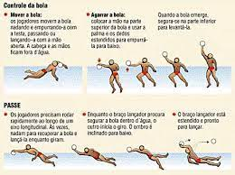

REGRAS

Oficialmente, as competições são disputadas em piscinas de dimensões variáveis: a
largura deve
medir entre dez e vinte metros; o comprimento deve medir entre 20 e 30 metros; e a profundidade mínima deve ser de
dois metros. A duração de uma partida é de quatro tempos de sete minutos cada. A bola apresenta massa variável
entre
400 g e 450 g e é diferente para jogos femininos e masculinos. As duas equipes são formadas por sete jogadores
cada,
os quais não podem pegar a bola com as duas mãos ao mesmo tempo (com exceção do goleiro) e nem afundar a bola para
impedir o adversário de roubá-la. A diferenciação entre os jogadores de cada equipe ocorre por meio da cor da
touca,
que deve ser distinta entre os times. Mais uma vez os goleiros são exceções: ambos usam toucas de cor vermelha.
Além
disso, deve-se frisar que, embora o contato físico seja constante, bater, empurrar e chutar os adversários são
atitudes proibidas. A condução da bola deve ser feita sempre com uma das mãos ou com os braços.